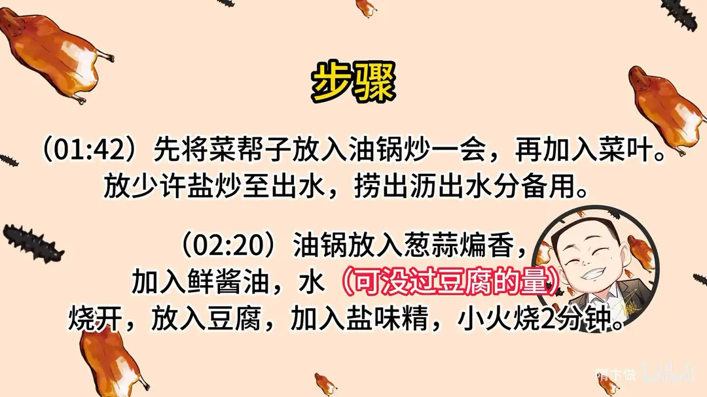

小白菜烧豆腐
隋卞一做。豆腐切 0.8 厘米厚的片，七成油温下锅煎到两面金黄；小白菜菜帮先炒、菜叶后下，炒出水后与豆腐同烧，最后勾芡、淋少许花椒油。
原视频：https://www.bilibili.com/video/BV1tN411z7en
食材
卤水豆腐、小白菜 等 8 样
| 类别 | 用料 | 用量 |
|---|---|---|
| 主料 | 卤水豆腐 | 适量 |
| 主料 | 小白菜 | 适量 |
| 辅料 | 淀粉 | 适量 |
| 调料 | 盐 | 适量 |
| 调料 | 味精 | 适量 |
| 调料 | 葱 | 适量 |
| 调料 | 蒜 | 适量 |
| 调料 | 花椒油 | 适量 |
步骤
- 切配：豆腐切厚片备用，厚 0.8 厘米左右；小白菜掰开，叶和菜帮子分开放。
- 煎豆腐：油温七成热，关小火下豆腐片，锅中有油切忌翻锅，大火煎至两面金黄，倒出备用。
- 炒青菜：先将菜帮子放入油锅炒一会，再加入菜叶；放少许盐炒至出水，捞出沥出水分备用。
- 烧豆腐：油锅放入葱蒜煸香，加入鲜酱油、水，水量可没过豆腐，烧开后放入豆腐，加入盐、味精，小火烧 2 分钟。
- 合烧出锅：豆腐烧软，加入小白菜盖在豆腐上烧 1 分钟，勾芡加少许花椒油即可。
讲解要点
难度：★★☆☆☆（家常菜，难点只有两个：豆腐煎透不翻碎、小白菜不焯水而用油炒去涩）
为什么这么做
- 选老卤水豆腐、切 0.8 厘米厚：卤水豆腐结实、不易碎；太薄一煎就焦、太厚中间煎不透，0.8 厘米能煎出外皮又不至于干。
- 半煎半炸：饭店为省时用大油锅直接炸，家里少放油、煎到两面金黄即可，效果一样——目的都是让豆腐表面结壳。
- 煎过的豆腐才会吸汁：表面结了一层壳，烧的时候既不容易散，又能把汤汁和味道吸进去，这是整道菜的关键。
- 下锅后不要频繁翻锅：刚下锅的豆腐还软，一翻就碎；等底面煎硬再动。
- 菜帮先下、菜叶后下：菜帮厚、熟得慢，菜叶一烫就软，分开下才能同时熟。
- 小白菜要油炒不能焯水：用少许盐炒到出水，把苦涩汁水炒出来再沥干；焯过水的小白菜口感发软、鲜味流失，怎么烧都不好吃。
容易翻车
- 豆腐煎的时候锅底油别太少，油少了会粘锅、破皮。
- 小白菜炒出的水一定要沥干，带着苦涩水一起烧，整盘菜味道就毁了。
- 烧豆腐的水量要能没过豆腐，水太少豆腐吸不到味，中途补凉水又会让豆腐变硬。
- 最后勾芡要收到挂汁的状态，芡汁太稀就裹不住豆腐和小白菜。
原片尾卡

原片文案
AI 字幕校准稿
你要是小白菜焯水，绝对不好吃。今天教你们个家常菜，小白菜烧豆腐。原来也有人问，为什么在家里做和饭店做的不一样，我也算是在饭店待过几年。
豆腐选的是一块老的卤水豆腐，直接切厚片，大约 0.8 厘米。小白菜咱就很随意了，掰一下就行。掰的时候把菜帮、就是杆的地方往前放，叶子往后边分开着放，因为它俩下锅的顺序不一样。
油温大概七成热，就在酒店来讲，这个工序基本都是炸，省时省力。家里边咱就少放点油，半煎半炸就行了。煎这一步的作用呢，是烧的时候它很容易吸汁、吸味道。现在这样就可以了，把它倒出来。
然后锅里边不用放油，把这小白菜帮子先下进去，少放点盐，让它焯一下水，变色了再把叶子放进去。你看它就出汤了，然后把它倒在罩子里边儿。你们觉得在家里做饭没有饭店做的好吃，其实就是那个小白菜的苦涩的水没给它去掉，就影响了整体这个味儿。
锅里放油，然后把蒜放进去，一定要煸黄，放入葱花，倒入鲜味酱油，加入水。把豆腐倒进去，水要加到没过豆腐，定一下味儿，放点盐、味精，关小火烧上 2 分钟。
小白菜烧豆腐，这一步很关键：烧一会儿这个豆腐软了，证明这个味道已经吸进去了，咱们把小白菜放里面，盖在豆腐上面，让它热一下，大火再烧一分钟，勾芡。炒菜还是有汁有芨，来点花椒油。您不爱吃花椒油，来点香油也可以，出锅了。
那这个小味儿嘎嘎的，挠挠的小白菜烧豆腐，兄弟你一定会爱上它的。我不知道该怎么形容，唯一能想到的形容词就是合适：没有哪个味道是特别突出的，但是哪个味道又都没少，它的味道和口感又平衡又合适，就好像这个菜应该就是这样的。我觉得没有什么形容词能比合适和舒服更能形容它很好吃。
简单的大家做一下吧，一定要注意：小白菜如果直接搁汤里烧，嚼着可能会有点费劲。厨师在考试的时候有这么一道菜，就是炒豆芽，这个跟那个菜有近似的地方，就是必须得用油炒，不能焯水，你要是小白菜焯水，你绝对不好吃，口感也不好。